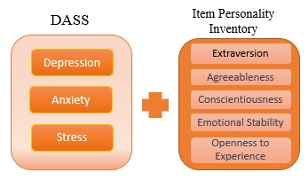
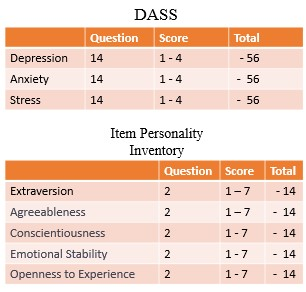

Depression Anxiety Stress Scales (DASS) responses from kaggle, which contains individuals’ responses to 42 DASS questions, to 10 Personality Inventory responses,
and demographic data such as education, age, and gender, this site provides DASS responses summary to viewers.
The summary is two visualizations, dass response histogram and average score of Personality Inventory responses.
return homepage

